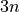
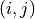
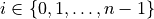
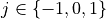
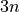
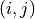
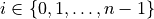
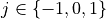
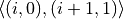
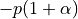

oass.AlgorithmicTrading
- class oass.AlgorithmicTrading.DecisionMakerOASS(head_mask, tail_mask, device=device(type='cuda'))[source]
Bases:
objectThe decision maker of OASS for algorithmic trading.
- Parameters
head_mask (int) –
head_mask.tail_mask (int) –
tail_mask.device (torch.device) – The computing device.
- class oass.AlgorithmicTrading.TrainerOASS(head_mask, tail_mask, sequence_length, buy_cost_pct=0.0001, sell_cost_pct=0.0001, gamma=1.0, device=device(type='cuda'))[source]
Bases:
objectThe trainer of OASS for algorithmic trading.
- Parameters
head_mask (int) –
head_mask.tail_mask (int) –
tail_mask.sequence_length (int) – The length of each sequence.
buy_cost_pct (float) – The cost ratio when the agent chooses to buy.
sell_cost_pct (float) – The cost ratio when the agent chooses to sell.
gamma (float) – The discount factor in the reward value function.
device (torch.device) – The computing device.
- difficulty
difficulty.- Type
float
- build_graph()[source]
Build a DAG.
Assuming that the
sequence_lengthis , then there are  nodes in the graph. A node is represented as , where  represents the time step and  represents the number of stocks held.
, then there are  nodes in the graph. A node is represented as , where  represents the time step and  represents the number of stocks held.
- calculate_reward(buy_price_batch, sell_price_batch, buy_cost_pct, sell_cost_pct)[source]
Calculate the node rewards and edge rewards.
In this problem, these rewards are dynamic. The node reward represents the corresponding stock value at the last time step, and is zero at other time steps. The edge rewards represent the change of money. For example, the edge reward of  is , where
 is the price and
is the price and  is the transaction cost ratio.
is the transaction cost ratio.- Parameters
buy_price_batch (torch.Tensor) – A batch of buy price. The shape is
(batch_size, sequence_length).sell_price_batch (torch.Tensor) – A batch of sell price. The shape is
(batch_size, sequence_length).buy_cost_pct (float) – The cost ratio when the agent chooses to buy.
sell_cost_pct (float) – The cost ratio when the agent chooses to sell.
- Returns
The reward when arriving at each node. The shape is
(sequence_length, 3, batch_size). edge_reward (torch.Tensor): The reward when passing each edge. The shape is(sequence_length, 3, batch_size).- Return type
node_reward (torch.Tensor)
- test_epoch(model, data_loader, **kwargs)[source]
Test the model for an epoch.
- Parameters
model (torch.nn.Module) – The neural network model.
data_loader (torch.utils.data.DataLoader) – The data loader which contains the
dev(ortest) dataset.
- Returns
The average loss and reward of each sequence in the data loader.
- Return type
sum_loss, sum_reward (float, float)
- train_epoch(model, data_loader, optimizer, **kwargs)[source]
Train the model for an epoch.
- Parameters
model (torch.nn.Module) – The neural network model.
data_loader (torch.utils.data.DataLoader) – The data loader which contains the
traindataset.optimizer (torch.optim.Adam) – The optimizer provided by PyTorch.
- Returns
The average loss and reward of each sequence in the data loader.
- Return type
sum_loss, sum_reward (float, float)